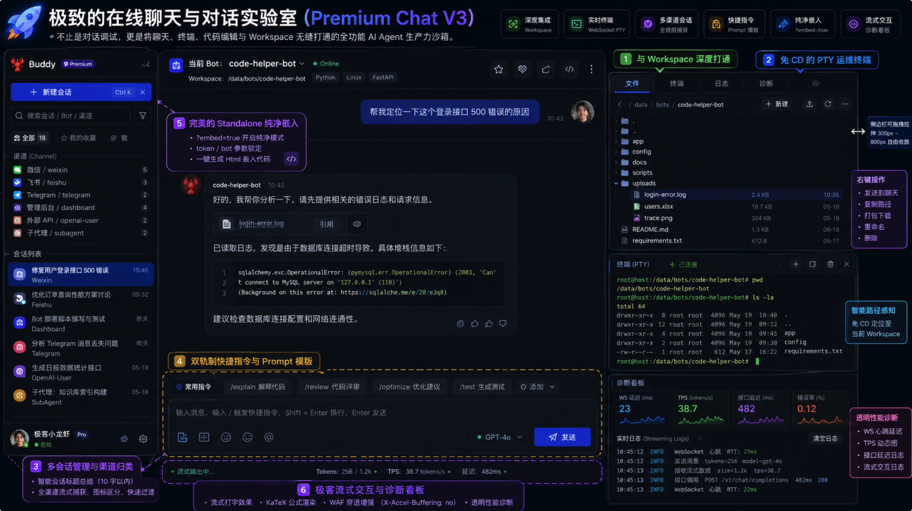
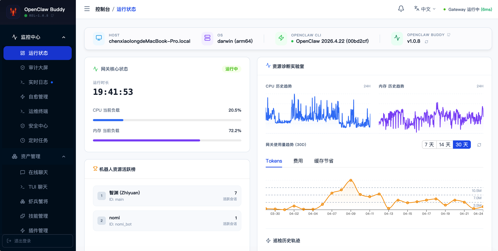
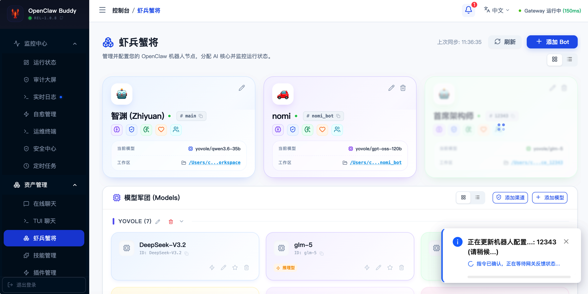
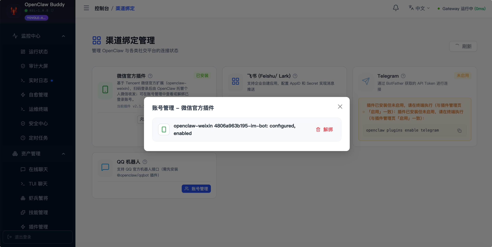
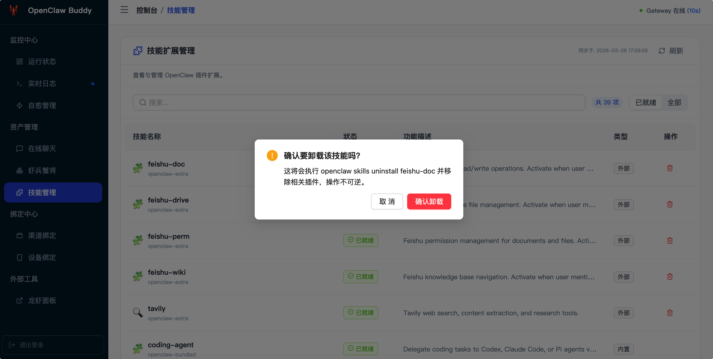

Chat V3 工作台
多会话、流式聊天、Workspace 文件、Skills、Console、诊断面板同屏协作，减少窗口切换。
Capabilities
多会话、流式聊天、Workspace 文件、Skills、Console、诊断面板同屏协作，减少窗口切换。
按 Bot 感知专属工作区，支持在线浏览、编辑、上传、附加到对话和上下文联动。
基于 WebSocket 的远程终端自动定位到当前 Bot 工作区，适合边聊边看输出。
解析 OpenClaw 配置，管理 Bot、专家模板、模型渠道、默认模型和连通性测试。
可视化安装、启用与热重载 Skills、微信、飞书、Telegram、QQ Bot 等渠道插件。
心跳探针、配置备份回滚、异步任务、审计大屏、系统指标和飞书报警支撑日常运营。
Workflow
Screens





Use Cases
不用记 CLI，在 Web 面板完成 Bot、模型、插件和渠道配置。
把聊天、文件、技能和终端放在一起，适合持续调试和运营 Agent。
统一处理微信、飞书、Telegram 等入口的会话、授权、日志和告警。
Contact
适合从 OpenClaw 可视化管理、多渠道接入、Chat V3 工作台或守护自愈能力开始讨论。
cexlong@gmail.com